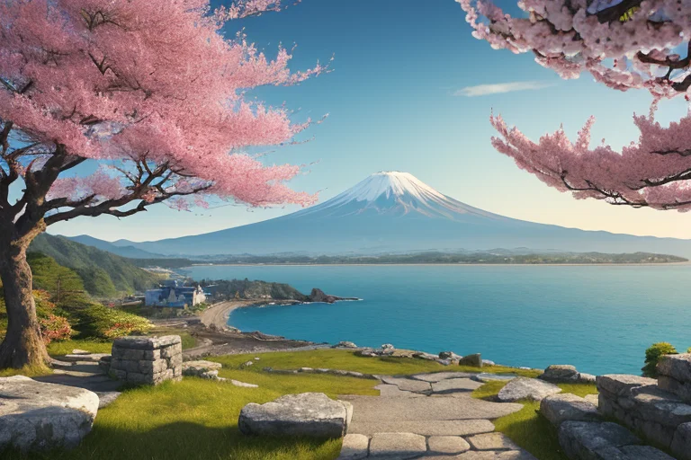
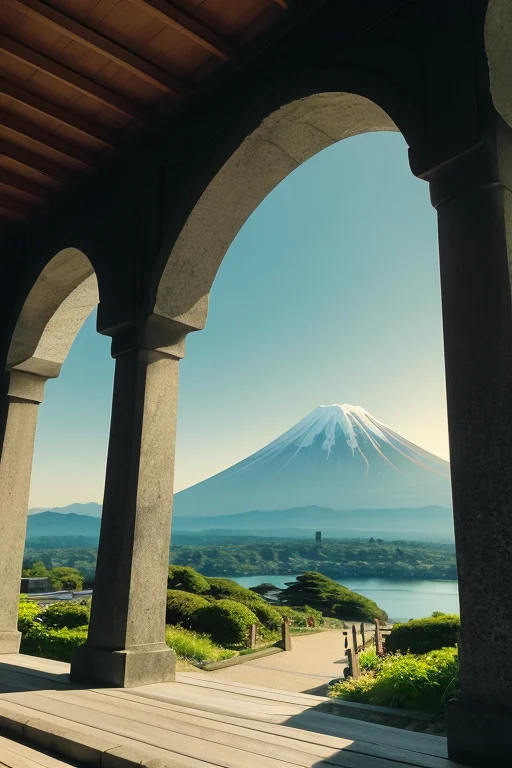
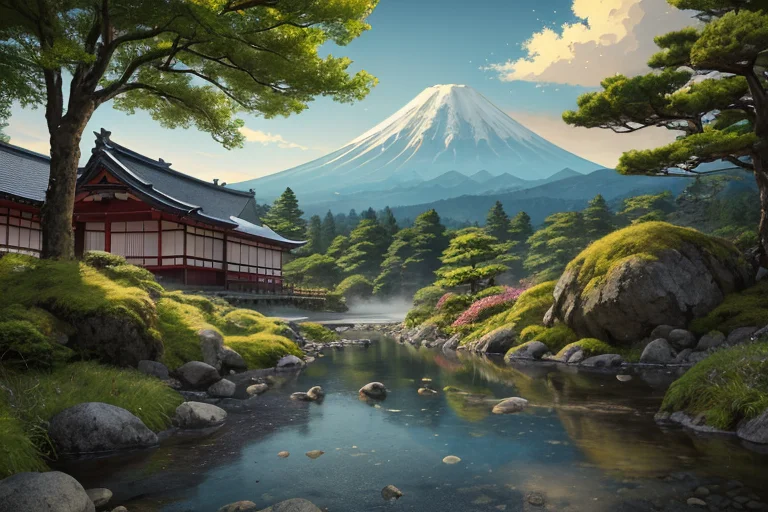
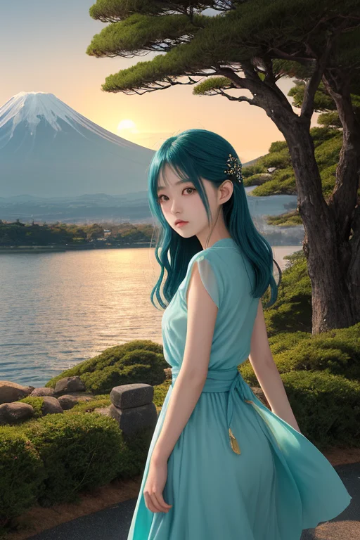
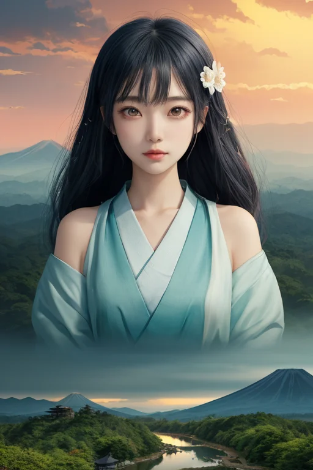

第一章 現実の静岡
あなたはまだ気づいていない。この土地にも、王がいることを。
駿府城跡の静かな石垣に、春の陽が柔らかく当たる。ここは徳川家康が天下泰平の礎を築き、隠居の地として選んだ城。今は市民の憩いの公園となり、訪れる人々はその歴史の重みよりも、咲き誇る桜の美しさに目を奪われる。しかし、この土地の深層では、かつての大政奉還という巨大な「均衡の移行」が、微かな振動として今も残っている。東海道五十三次の要衝として、人と物と情報が行き交ったこの地は、常に「動き」そのものによって「静けさ」を保ってきた。
三保の松原から望む富士は、今日も完璧な逆三角形を描いている。海と空と山の均衡が生み出すこの景観は、千年変わらぬ安定の象徴に見える。だが、地質学者なら知っている。この美しさの下で、フィリピン海プレートとユーラシアプレートがせめぎ合い、絶え間ない力の均衡を探り続けていることを。均衡は止まらない。動的であることをやめた時、それは均衡ではなく、ただの静止でしかない。

第二章 歪みの兆候
久能山東照宮の石段を、均整王スルガリアはゆっくりと上った。ここは、大御所となった家康が駿府城で隠居生活を送りながら、なお天下の均衡を測り続けた地に近い。王の感覚には、歴史の転換点が地層のように重なり、微かな振動を放っているのがわかる。東海道五十三次が人と物と情報を流し、新たな均衡を生み出したあの時代のエネルギーが、今も地中を脈打っていた。
ふと、王は足を止めた。手すりに触れた指先に、予定外の「ずれ」が伝わってくる。それは物理的な地震の前触れではない。時代の流れが生む、人々の意識のうねり──静岡という地が、常に「東へ向かう道」と「留まる平穏」の狭間で揺れてきた、その古くて新しい歪みだった。茶畑が広がる丘陵も、浜名湖で養殖されるうなぎも、この地の豊かさは全て、絶え間ない動的均衡の上に成り立っている。王は目を閉じ、主席妖精エクイナが山海のエネルギーを調整する微かな音に耳を澄ませた。均衡は決して止まらない。止まろうとする瞬間、大きな歪みが生まれるのだ。

第三章 王の葛藤
修善寺の渓流は、常に同じ音を立てているようで、実は一瞬として同じ水の流れではない。王はその川縁に立ち、己の内なる均衡が揺らぐのを感じていた。駿府城で隠居生活を送る大御所・家康の存在が、この地の「留まろうとする力」を異常に増幅させていた。東海道を東へ向かう人々の「動こうとする意志」との間に、目に見えない巨大な歪みが蓄積しつつある。
「このままでは、やがて大きな軋みが生じます」
エクイナが静かに告げた。その声には、いつもの穏やかさの中に、初めて焦りの色が混じっていた。
王は知っていた。歪みを解消するには二つの方法がある。家康の隠居という「留まる力」を弱めるか、あるいは東海道の流れそのものを一時的にせき止めるか。どちらも、歴史の表舞台では些細な偶然の連鎖として現れるだろう。しかし、その「些細な調整」が、この国の未来をどちらへ向けるか。
富士山は沈黙していた。均衡を保つとは、ただ現状を維持することなのか。それとも、新たな均衡点へと移行するための、痛みを伴う一歩なのか。王は、己の核となる問いと真正面から向き合った。

第四章 妖精との対話
浜名湖の水面は、夕日に染まり、金と青の均衡を保っていた。エクイナはそのほとりに立ち、王の問いを静かに受け止めた。
「均衡とは、静止ではありません」と、妖精は湖面を指さした。「この水は、常に出入りし、かき混ぜられ、それでいて湖という形を保っています。止まれば、腐敗が始まります」
スルガミアが、三保の松原から吹いてくる潮風に乗って現れた。「富士もまた、噴火という激しい変革の末に、今の美しい均衡を築きました。私たちが調整するのは、破壊そのものではなく、破壊から新たな形が生まれる『間』です」
王は、駿府城で家康が隠居という形で新たな政権の均衡を準備したように、歴史の転換点には、古い均衡を解き、新しい均衡を準備する「間」が必要なのだと理解した。変革は、より高次の均衡への移行である。ただ、その移行の痛みを、少しでも和らげることが、自分たちの役目なのか。
「では、私たちは何を為すべきか」
エクイナがほほえんだ。「流れを完全に止めず、しかし、流れが全てを押し流さないよう、ほんの少し、『間』を作ることです。それが、この列島の、私たちの均衡です」

第五章 微調整と余韻
駿府城の天守閣跡から、家康の隠居後の町を見下ろす。彼はここで、泰平の世の均衡を設計していた。その設計図に、ほんのわずかな「間」を、スルガリアは挿入した。東海道を往来する人々の足取りを、ほんの一瞬だけ軽くし、久能山東照宮の工事現場で、職人が踏み外す岩を、風でほんの少しずらした。歴史の大きな流れを変えることはできない。だが、その流れが生む無数の偶然の一つを、ほんの少しだけ調整することは許されていた。
代償は大きかった。富士山の稜線と水平円を描く彼の紋章が、一瞬、かすんだ。王としての存在そのものが、この世界線に深く介入した「歪み」として記録される。彼は感情を理解し始めていたからこそ、この選択がもたらす未来の重みを感じていた。均衡は止まらない。止まってしまえば、それは死だ。均衡とは、絶え間ない微調整の連続であり、時に大きな代償を払ってでも、次の均衡への「間」を確保することなのだ。
浜名湖の水面が夕陽で金色に染まる。うなぎが泳ぎ、三保の松原の先には富士が静かに佇む。すべては、ほんの少し調整された、新たな均衡の中にある。
あなたの町にも、王がいる。